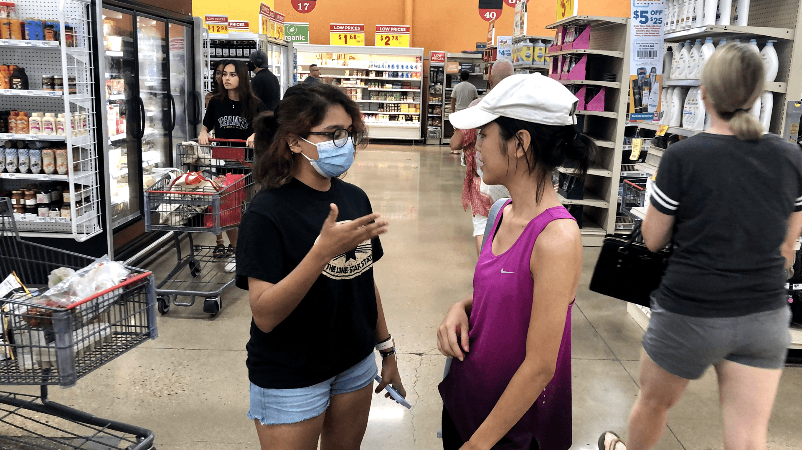
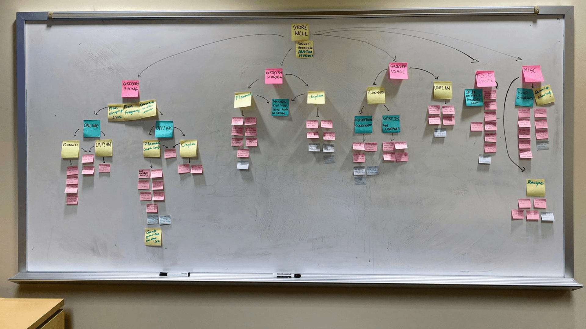
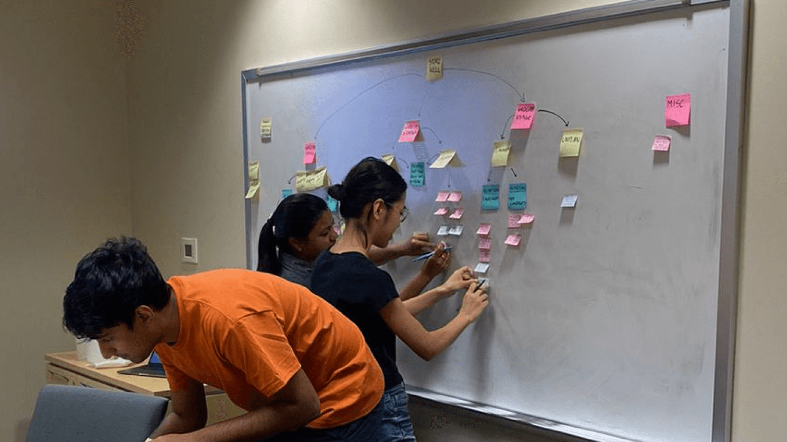
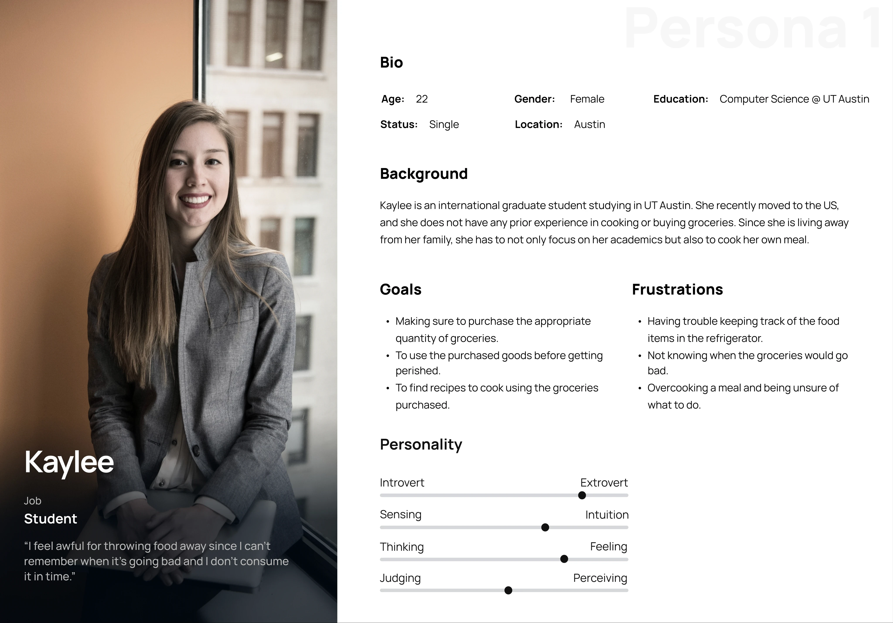
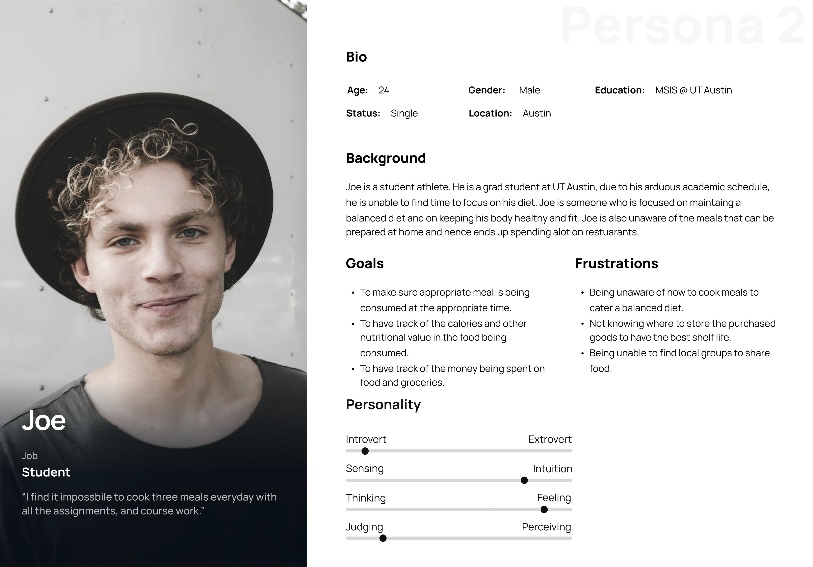
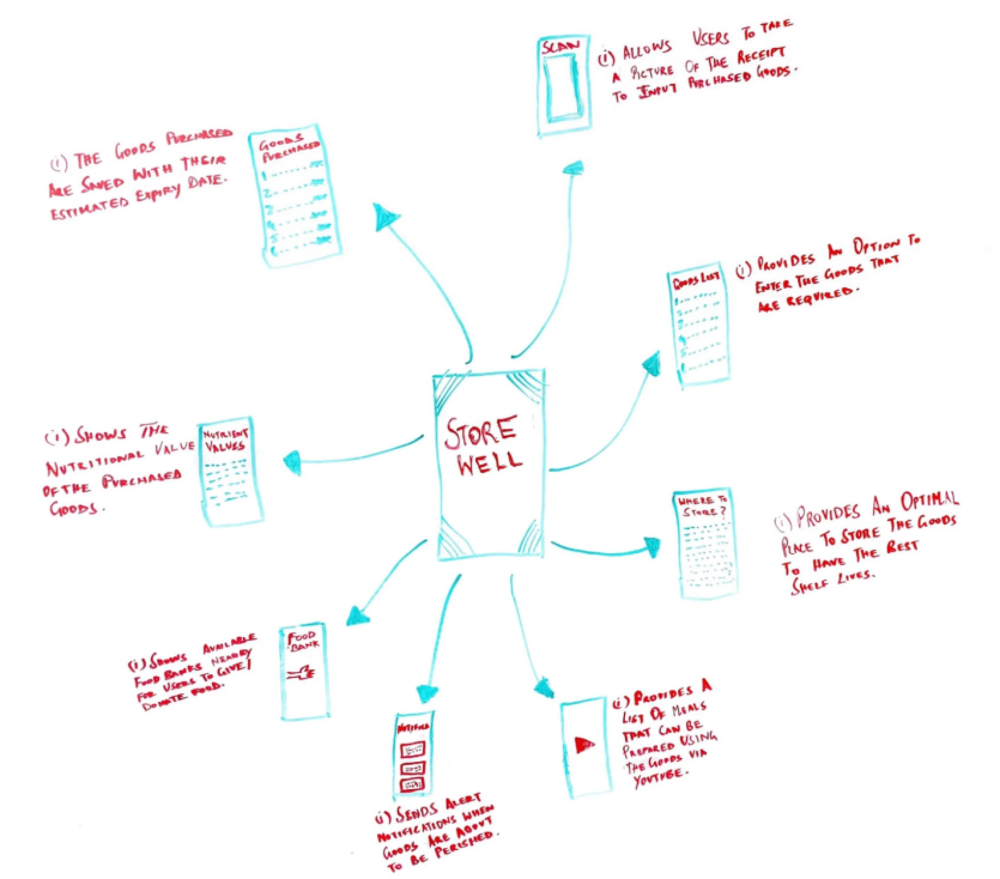
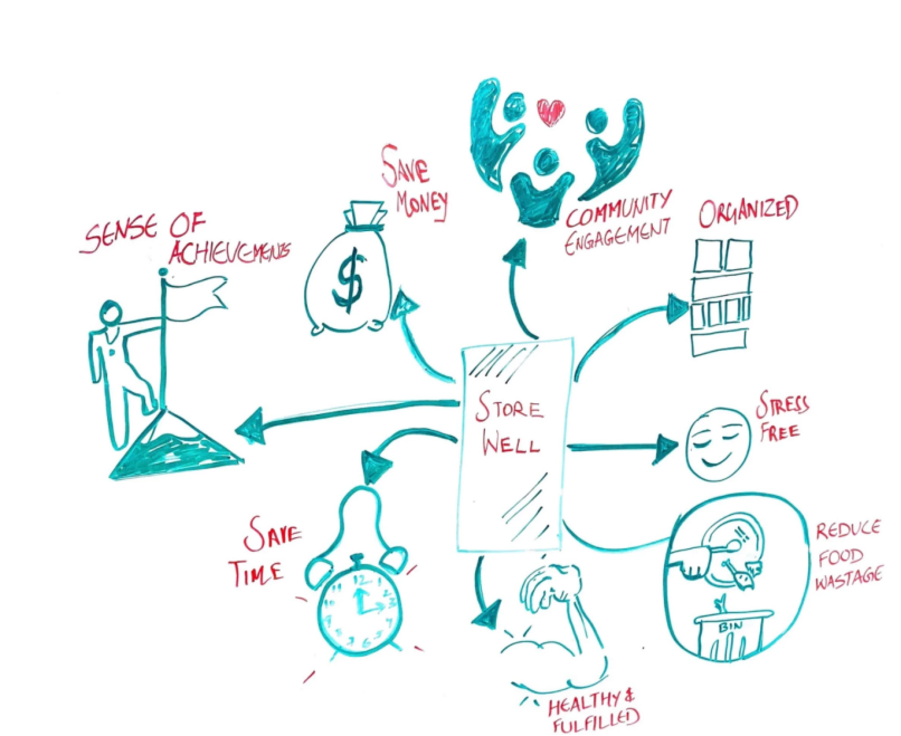
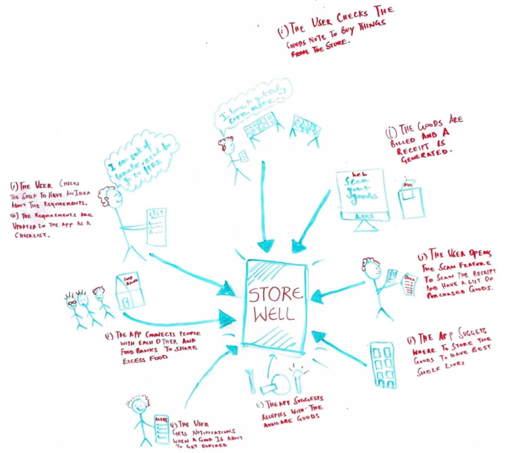
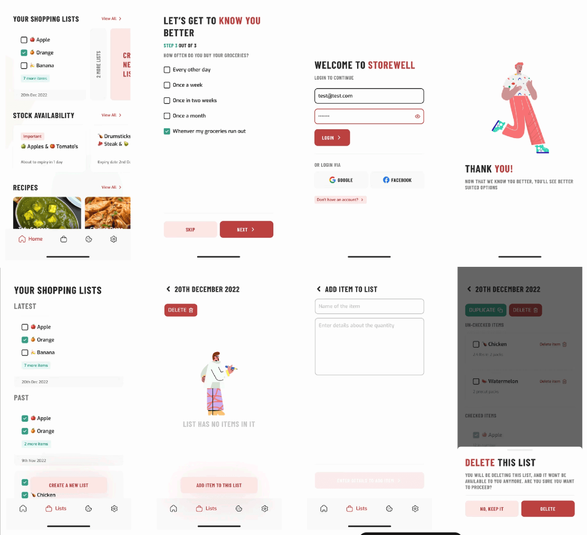
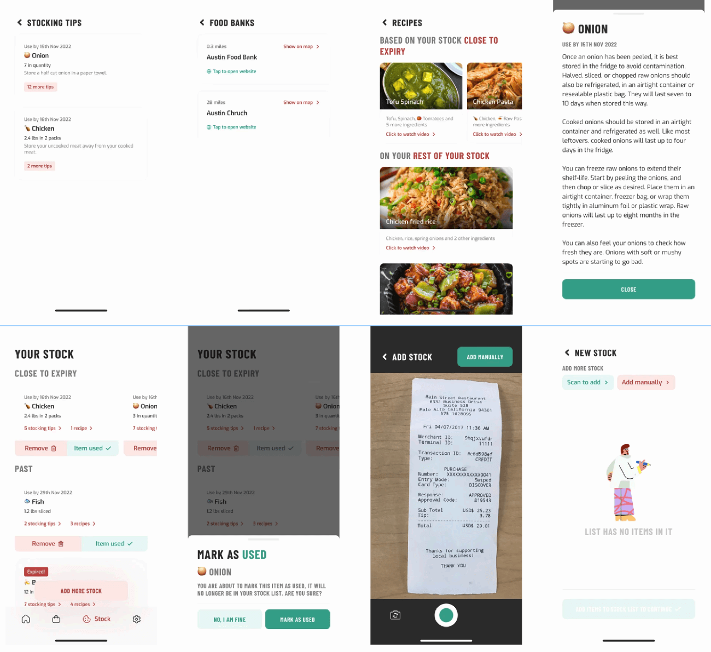

(12)
MoneyLingo
The board game that became a quiz
UX DesignResearchDesign ThinkingsDesign Systems
Open
Grocery management for people with no time

Not everyone like's to read to much nowadays (thanks TikTok). See a comic strip?

People with busy schedules struggle to buy groceries well and struggle harder to manage what they've bought. Food goes off, money gets wasted, and meal prep gets abandoned somewhere around Wednesday. For students there's a budget dimension, and behind all of it a food-waste problem that's bigger than any one kitchen.
NoWaste (inventory and expiration tracking), FridgePal (fast product entry), Olio (surplus food redistribution). Each solved a slice.
On habits and pain points, deliberately used to narrow scope rather than pile on features.
Ideas (everything, good or bad), Product Goals (merged into real-world actions), Users (scenarios)
On habits and pain points, deliberately used to narrow scope rather than pile on features.
For behavioural depth: buying, cooking, storing, and where it breaks down. These fed a WAAD, a flow model, work roles, and later personas.
We tailed people while they actually bought groceries. Not asking — watching.



Shadowing produced the finding the product turned on: people buy more in person than they do online.
That sounds small. It reshapes everything. It means the in-store trip is where over-purchasing originates, which means it's where waste originates, which means an app that only helps you manage what you've already bought is arriving too late. The intervention had to sit before and during the shop, not after it.
International student, first time away from home, no experience buying or storing food, throws a lot away because portion sizes are guesswork.

Student athlete, punishing schedule, cares about a balanced diet, doesn't know what he can cook at home so overspends on restaurants.

The survey told us grocery shopping is an experience for people, not a chore to be abstracted. So we called it a "shopping list," not notes.
Groceries became "stock," because people stock things. And the stocking list UI was built to look like fridge shelves; because that's the mental model people already have, and borrowing it costs nothing.



Five flows: build a shopping list · add bought items to stock · find storing tips · find recipes from what you have · find nearby food banks to share surplus.


People wanted it built. But: the app was too cluttered and complex, icons were hard to find, and language needed to be clearer with onboarding to support it. Storing tips landed well, and people were genuinely excited about video content.
"Too cluttered" is the feedback I'd take most seriously now. We ran good research and then tried to honour all of it at once, five flows in a first release is three too many. The metaphor work was right; the restraint wasn't there yet.
The board game that became a quiz